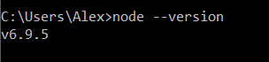
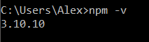
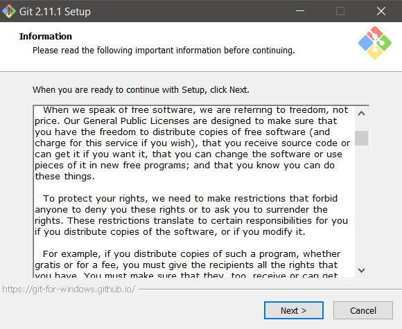
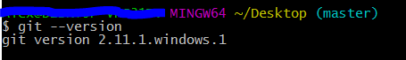
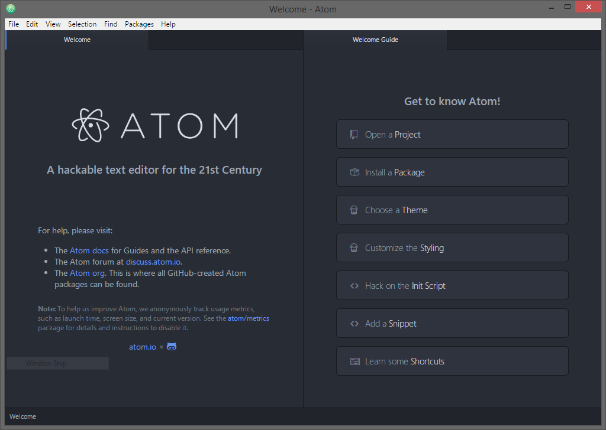
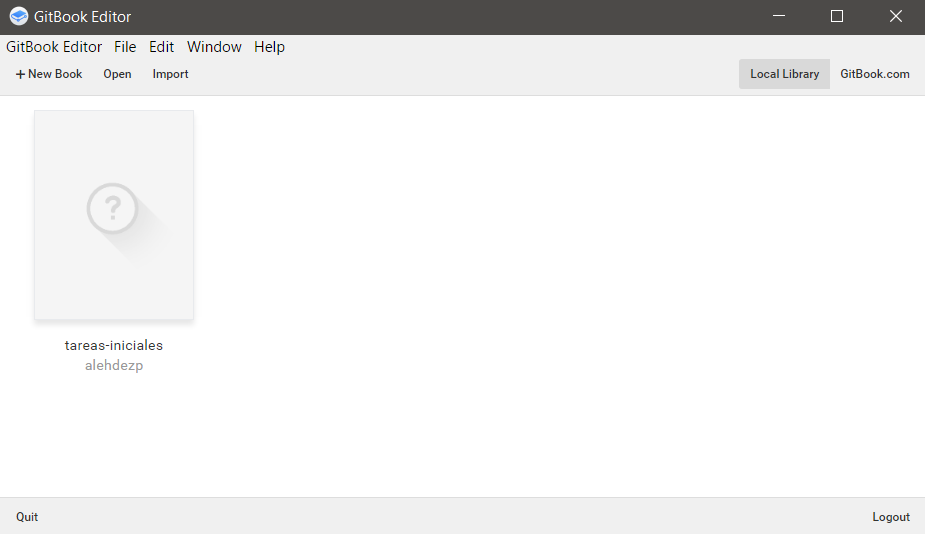

I
nstalación de aplicaciones
A continuacion veremos una sencilla guia de como instalar las siguientes aplic
NodeJS
NodeJS es un entorno de ejecución para JavaScript construido con el motor de JavaScript V8 de Chrome. Node.js usa un modelo de operaciones E/S sin bloqueo y orientado a eventos, que lo hace liviano y eficiente.
El cual se puede descargar desde el siguiente enlace nodejs.org.
Instalacion
Para instalar NodeJS descargamos el instalador de la pagina oficial para nuestro sistema operativo desde el enlace anterior y procedemos a ejecutarlo.
Seguimos los pasos indicados en el instalador los cuales nos permitiran ejecutar los comandos "npm" y "node" en la terminal.
Para verificar la instalacion de NodeJS, abrimos una terminal y ejecutamos el comando:
node --version

Y el comando:
npm -v

Al obtener la salida de los dos comandos con las versiones de node y npm respectivamente podemos confirmar la instalacion de los dos comandos.
Git/Git for Windows
Git es un software de control de versiones, pensando en la eficiencia y la confiabilidad del mantenimiento de versiones de aplicaciones cuando éstas tienen un gran número de archivos de código fuente.
Para instalar git para Windows en Git-for-Windows y para Mac en Git-for-Mac.
Instalación
Para las instalaciones en Windows y en Mac procedemos a seguir la instrucciones y seleccionar preferencias con las que deseamos instalar Git.

Para instalar instalar en un sistema Debian/Ubuntu lo podremos hacer con el siguiente comando:
sudo apt-get install gitEn caso de tener otra distribución de Linux visita este enlace para poder instalar Git.
Para comprobar la instalación ejectamos en la terminal el comando:
git --version
Atom
Atom es un editor de codigo de software libre desarrollado por el personal de GitHub.
La instalacion de este editor de texto es muy sencilla, basta con descargarlo en el siguiente enlace atom.io y ejectar el archivo y tras su ejecucion ya estamos listos para poder utilizar Atom.

GitBook
GitBook es una excelente herramienta para crear documentación de proyectos y libros técnicos usando Markdown y Git/Github.
GitBook tiene una version de escritorio la cual nos permite editar nuestros libros desde nuestra propia maquina y realizar un push de los cambios a nuestra cuenta de repositorio ya sea de GitHub o GitBook.
